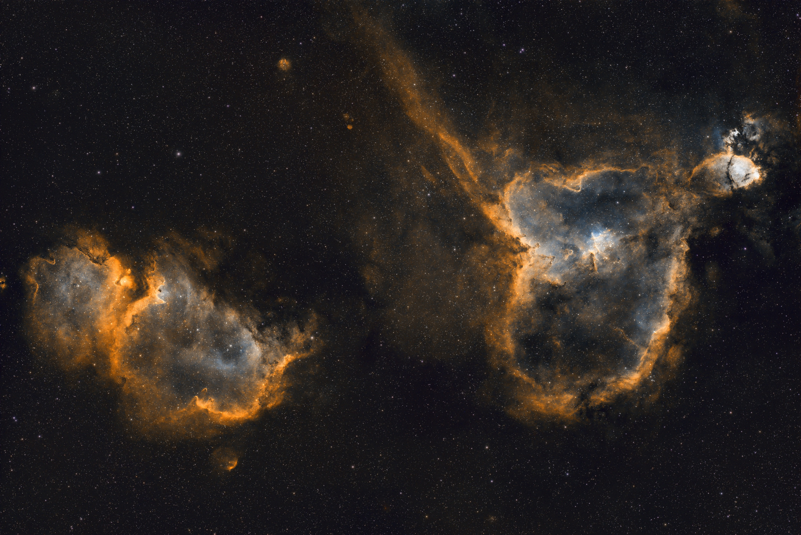

THE SKY, IDENTIFIED · 01
Heart & Soul
Explore the photograph. Discover what lies inside.

Pinch or use Zoom; drag to pan. Keyboard: + / − to zoom, arrows to pan, 0 to reset. Tap a marker for its catalogue entry.
Select an object or star
SIMBAD ↗Image information
- Source resolution
- 6248 × 4176 · RGB 16-bit TIFF
- Field of view
- ≈ 5.0° × 3.4°
- Centre · J2000
- 02h 43m 21.94s
+61° 06′ 33.55″ - Header exposure
- 60 × 300 s · 5 h
The header records a mixed-filter stack; the D1/D2 frame split is not confirmed.
RGB histogram
Web photograph · intensity 0–255 · shared linear count scale. Based on the normal image, unchanged by zoom or Negative; not a raw-data histogram.
About the labels
Catalogue positions are projected through the TIFF’s embedded TAN-SIP sky-coordinate solution. Rings mark positions, not measured object boundaries. Stars shows two selected named stars, not a complete catalogue. Catalogue descriptions are in English.